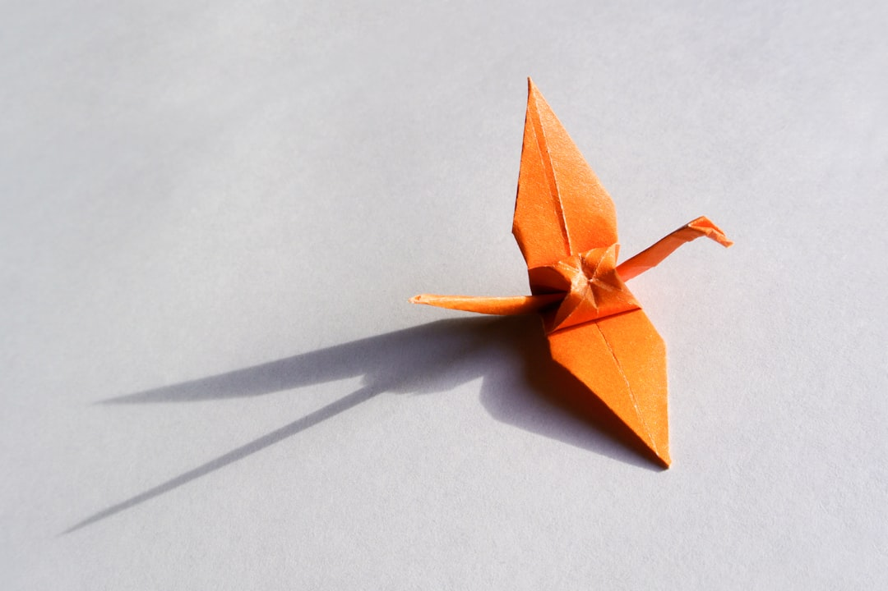

千年传承
纸艺起源于汉代造纸术发明之后，历经千年演变，形成独特的艺术形式，承载着深厚的文化底蕴。
中国传统纸艺文化
纸艺，连接传统与现代，传承手作之美。
从剪纸的镂空之韵，到折纸的立体之美，
承载千年东方审美与匠心智慧。
中国纸艺源远流长，从剪纸的镂空之美，到折纸的立体造型，
每一次折叠、每一刀剪裁，都是对传统美学的致敬与创新。
纸艺起源于汉代造纸术发明之后，历经千年演变，形成独特的艺术形式，承载着深厚的文化底蕴。
每一件纸艺作品都需要精湛的技艺和耐心，从设计到完成，体现着匠人的专注与追求。
传统纸艺与当代设计相结合，在保持传统韵味的同时，展现出新的艺术生命力。


